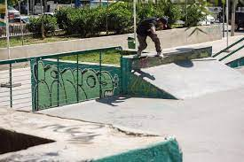
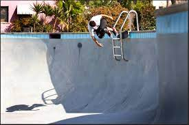
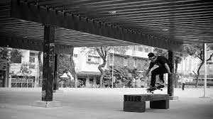
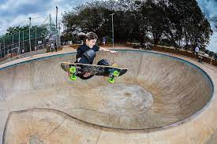
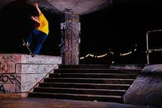
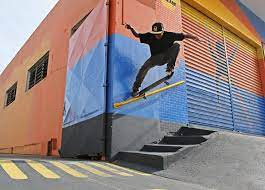

Picos
Favoritos
Ver todos-

Wallride da FGP
Julia Fonseca
-

Borda de valores
Julia Fonseca
-

Wallride do reboucas
Julia Fonseca
-

Segundo setor da praca maua
Julia Fonseca
-

Borda de valores
Julia Fonseca
-

Wallride de SP
Julia Fonseca
Mais visitados
Bruno Lopez
Gap do Itaú da Voluntários da Pátria
73 visualizacoes
Bruno Lopez
Gap com mureta da Voluntários
63 visualizacoes
Bruno Lopez
Rampa da entrada do túnel Rebouças
53 visualizacoes
Bruno Lopez
Wallride de pedra portuguesa da FGP
43 visualizacoes